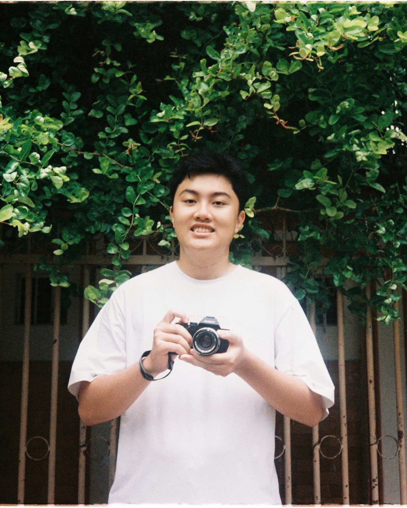

- June 2025: Our paper on Adversarial Robustness Evaluation of a Vietnamese Handwriting OCR System has been accepted to The 8th International Conference on Multimedia Analysis and Pattern Recognition (MAPR).
|  |
Thai Bao Huynh (Student) [ GitHub | Google Scholar | Resume ]Research Student (ELO Lab UIT)Faculty of Computer Science, University of Information Technology, VNUHCM Email: tbaro27102005@gmail.com or 23520105@gm.uit.edu.vn Research interests: Genetic Algorithm & Optimization (White-box & Black-box Adversarial Attacks), Machine Learning (Weakly supervised focus on complementary-label learning), NLP (Multi-agent system), Computer Vision (Video Events Retrieval System), ARM64 CPU Architecture, AIoT, Edge AI Advisor: Ph.D. Ngoc Hoang Luong I am an AI student at UIT–VNUHCM and a member of ELO @ UIT. My interests span Embedded Systems, IoT, and Artificial Intelligence. Currently, my research focuses on Genetic Algorithms & Optimization (White-box & Black-box Adversarial Attacks), Machine Learning (Weakly supervised focus on complementary-label learning), NLP (Multi-agent system), Computer Vision (Video Events Retrieval System), and ARM64 CPU Architecture, as well as some independent projects related to AIoT and Edge AI. I consider myself a curious and persistent learner, always eager to explore new ideas and push the boundaries of technology. |